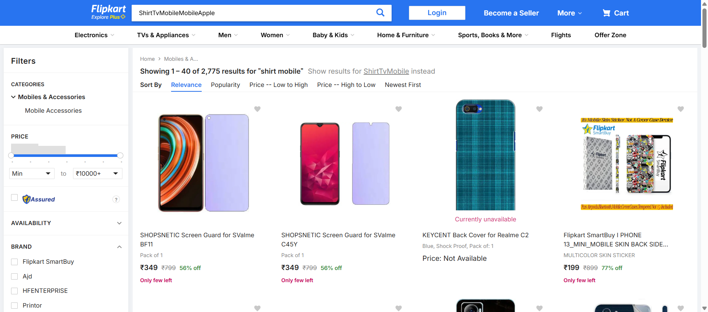
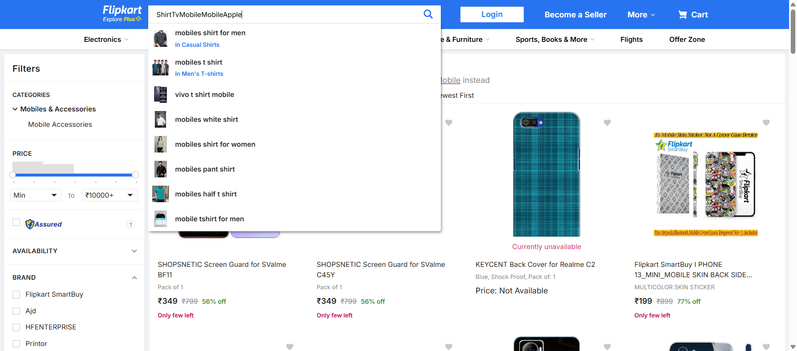

-
To validate the Flipkart Application
12:49:43 AM / 00:01:07:532 Fail
To validate the Flipkart Application
08.07.2025 12:49:43 AM 08.07.2025 12:50:50 AM 00:01:07:532 · #test-id=1FailTo get the title and price from search resultGiven Launch the Flipkart ApplicationWhen Close the popupThen It should Navigate to the Home pageGiven Enter the search text in the search fieldWhen Click the search iconStep skippedThen It should display the search result and get the title and priceStep skippedcom.Hooks.hooks.cleanUp(io.cucumber.java.Scenario)flipkartAutomationFailTo validate the search functionality with different valFailTo validate the search functionality with different valGiven Launch the Flipkart ApplicationWhen Close the popupThen It should Navigate to the Home pageGiven Enter the "Mobile" in the search fieldWhen click the search buttonThen It should navigate to the next page and display the corresponding paStep skippedcom.Hooks.hooks.cleanUp(io.cucumber.java.Scenario)FailTo validate the search functionality with different valGiven Launch the Flipkart ApplicationWhen Close the popupThen It should Navigate to the Home pageGiven Enter the "Shirt" in the search fieldWhen click the search buttonThen It should navigate to the next page and display the corresponding paStep skippedcom.Hooks.hooks.cleanUp(io.cucumber.java.Scenario)FailTo validate the search functionality with different valGiven Launch the Flipkart ApplicationWhen Close the popupThen It should Navigate to the Home pageGiven Enter the "Speaker" in the search fieldWhen click the search buttonStep skippedThen It should navigate to the next page and display the corresponding paStep skippedcom.Hooks.hooks.cleanUp(io.cucumber.java.Scenario)flipkartAutomationFailTo validate the search functionality with different valGiven Launch the Flipkart ApplicationWhen Close the popupThen It should Navigate to the Home pageGiven Enter the "Tv" in the search fieldWhen click the search buttonThen It should navigate to the next page and display the corresponding paStep skippedcom.Hooks.hooks.cleanUp(io.cucumber.java.Scenario)FailTo validate the Fashion FunctionalityGiven Launch the Flipkart ApplicationWhen Close the popupThen It should Navigate to the Home pageGiven User to move the Fashion linkWhen Cursor to move to the Kids linkStep skippedAnd Move to girls dress and clickStep skippedAnd Click the price high to low linkStep skippedThen It should dispay the relevent details and get the titleStep skippedcom.Hooks.hooks.cleanUp(io.cucumber.java.Scenario)flipkartAutomationFailTo validate upto addcart functionalityGiven Launch the Flipkart ApplicationWhen Close the popupThen It should Navigate to the Home pageGiven User can move to the login linkThen User can click the flipkart plus zoneStep skippedAnd Mouse move to the Home&Furniture linkStep skippedAnd Going to click the wall lampStep skippedAnd Scroll down the page and click one particular resultStep skippedAnd Enter delivery pincode and click the check linkStep skippedThen Pincode should be checked and displayed and verify the titlesStep skippedcom.Hooks.hooks.cleanUp(io.cucumber.java.Scenario)flipkartAutomationFailTo validate the Search functionalityGiven Launch the Flipkart ApplicationWhen Close the popupThen It should Navigate to the Home pageGiven User enter the Text in the Search fieldWhen Click the search buttonThen It should navigate to the search result page and display the relevent detailsStep skippedThen Extract the Results and print in consoleStep skippedThen Print the Third result and keep it in the consoleStep skippedAnd Select Minimum and Maximum AmountStep skippedAnd Select the BrandStep skippedAnd Select the RamStep skippedAnd Select the Battery CapacityStep skippedWhen It should display the Relevant resultStep skippedcom.Hooks.hooks.cleanUp(io.cucumber.java.Scenario)FailTo test the search functionality with excel sheetGiven Launch the Flipkart ApplicationWhen Close the popupThen It should Navigate to the Home pageGiven Enter Search Text In the Search FieldWhen Click search IconStep skippedThen It Should Display The Relevent ResultStep skippedcom.Hooks.hooks.cleanUp(io.cucumber.java.Scenario)
-
org.openqa.selenium.remote.UnreachableBrowserException
10 tests
org.openqa.selenium.remote.UnreachableBrowserException
10 failedStatus Timestamp TestName Fail 00:50:48 AM When click the search button To validate the Flipkart Application.To validate the search functionality with different val.When click the search buttonFail 00:50:40 AM Given Enter Search Text In the Search Field To validate the Flipkart Application.To test the search functionality with excel sheet.Given Enter Search Text In the Search FieldFail 00:50:48 AM When click the search button To validate the Flipkart Application.To validate the search functionality with different val.When click the search buttonFail 00:50:48 AM When click the search button To validate the Flipkart Application.To validate the search functionality with different val.When click the search buttonFail 00:50:48 AM When Click the search button To validate the Flipkart Application.To validate the Search functionality.When Click the search buttonFail 00:50:50 AM com.Hooks.hooks.cleanUp(io.cucumber.java.Scenario) To validate the Flipkart Application.To validate the search functionality with different val.com.Hooks.hooks.cleanUp(io.cucumber.java.Scenario)Fail 00:50:50 AM com.Hooks.hooks.cleanUp(io.cucumber.java.Scenario) To validate the Flipkart Application.To validate the search functionality with different val.com.Hooks.hooks.cleanUp(io.cucumber.java.Scenario)Fail 00:50:50 AM com.Hooks.hooks.cleanUp(io.cucumber.java.Scenario) To validate the Flipkart Application.To test the search functionality with excel sheet.com.Hooks.hooks.cleanUp(io.cucumber.java.Scenario)Fail 00:50:50 AM com.Hooks.hooks.cleanUp(io.cucumber.java.Scenario) To validate the Flipkart Application.To validate the search functionality with different val.com.Hooks.hooks.cleanUp(io.cucumber.java.Scenario)Fail 00:50:50 AM com.Hooks.hooks.cleanUp(io.cucumber.java.Scenario) To validate the Flipkart Application.To validate the Search functionality.com.Hooks.hooks.cleanUp(io.cucumber.java.Scenario) -
org.openqa.selenium.StaleElementReferenceException
4 tests
org.openqa.selenium.StaleElementReferenceException
4 failedStatus Timestamp TestName Fail 00:50:41 AM Given User can move to the login link To validate the Flipkart Application.To validate upto addcart functionality.Given User can move to the login linkFail 00:50:40 AM Given User to move the Fashion link To validate the Flipkart Application.To validate the Fashion Functionality.Given User to move the Fashion linkFail 00:50:41 AM Given Enter the search text in the search field To validate the Flipkart Application.To get the title and price from search result.Given Enter the search text in the search fieldFail 00:50:40 AM Given Enter the "Speaker" in the search field To validate the Flipkart Application.To validate the search functionality with different val.Given Enter the "Speaker" in the search field -
org.openqa.selenium.WebDriverException
3 tests
org.openqa.selenium.WebDriverException
3 failedStatus Timestamp TestName Fail 00:50:48 AM com.Hooks.hooks.cleanUp(io.cucumber.java.Scenario) To validate the Flipkart Application.To validate upto addcart functionality.com.Hooks.hooks.cleanUp(io.cucumber.java.Scenario)Fail 00:50:48 AM com.Hooks.hooks.cleanUp(io.cucumber.java.Scenario) To validate the Flipkart Application.To validate the Fashion Functionality.com.Hooks.hooks.cleanUp(io.cucumber.java.Scenario)Fail 00:50:48 AM com.Hooks.hooks.cleanUp(io.cucumber.java.Scenario) To validate the Flipkart Application.To get the title and price from search result.com.Hooks.hooks.cleanUp(io.cucumber.java.Scenario)
-
@Regression
9 tests
@Regression
9 failedStatus Timestamp TestName Fail 00:49:43 AM To get the title and price from search result To validate the Flipkart Application.To get the title and price from search resultFail 00:49:43 AM To validate the search functionality with different val To validate the Flipkart Application.To validate the search functionality with different valFail 00:49:43 AM To validate the Fashion Functionality To validate the Flipkart Application.To validate the Fashion FunctionalityFail 00:49:43 AM To validate upto addcart functionality To validate the Flipkart Application.To validate upto addcart functionalityFail 00:49:43 AM To validate the Search functionality To validate the Flipkart Application.To validate the Search functionalityFail 00:49:43 AM To test the search functionality with excel sheet To validate the Flipkart Application.To test the search functionality with excel sheetFail 00:49:43 AM To validate the search functionality with different val To validate the Flipkart Application.To validate the search functionality with different valFail 00:49:43 AM To validate the search functionality with different val To validate the Flipkart Application.To validate the search functionality with different valFail 00:49:43 AM To validate the search functionality with different val To validate the Flipkart Application.To validate the search functionality with different val -
@tc002
1 tests
@tc002
1 failedStatus Timestamp TestName Fail 00:49:43 AM To validate the Fashion Functionality To validate the Flipkart Application.To validate the Fashion Functionality -
@tc006
1 tests
@tc006
1 failedStatus Timestamp TestName Fail 00:49:43 AM To test the search functionality with excel sheet To validate the Flipkart Application.To test the search functionality with excel sheet -
@tc005
1 tests
@tc005
1 failedStatus Timestamp TestName Fail 00:49:43 AM To get the title and price from search result To validate the Flipkart Application.To get the title and price from search result -
@tc001
1 tests
@tc001
1 failedStatus Timestamp TestName Fail 00:49:43 AM To validate the Search functionality To validate the Flipkart Application.To validate the Search functionality -
@tc003
4 tests
@tc003
4 failedStatus Timestamp TestName Fail 00:49:43 AM To validate the search functionality with different val To validate the Flipkart Application.To validate the search functionality with different valFail 00:49:43 AM To validate the search functionality with different val To validate the Flipkart Application.To validate the search functionality with different valFail 00:49:43 AM To validate the search functionality with different val To validate the Flipkart Application.To validate the search functionality with different valFail 00:49:43 AM To validate the search functionality with different val To validate the Flipkart Application.To validate the search functionality with different val -
@tc004
1 tests
@tc004
1 failedStatus Timestamp TestName Fail 00:49:43 AM To validate upto addcart functionality To validate the Flipkart Application.To validate upto addcart functionality
Started
Aug 7, 2025 12:49:40 AM
Ended
Aug 7, 2025 12:50:50 AM
Features Passed
0
Features Failed
1
Features
Scenarios
Steps
Timeline
Tags
| Name | Passed | Failed | Skipped | Others | Passed % |
|---|---|---|---|---|---|
| @Regression | 0 | 9 | 0 | 0 | 0% |
| @tc002 | 0 | 1 | 0 | 0 | 0% |
| @tc006 | 0 | 1 | 0 | 0 | 0% |
| @tc005 | 0 | 1 | 0 | 0 | 0% |
| @tc001 | 0 | 1 | 0 | 0 | 0% |
| @tc003 | 0 | 4 | 0 | 0 | 0% |
| @tc004 | 0 | 1 | 0 | 0 | 0% |